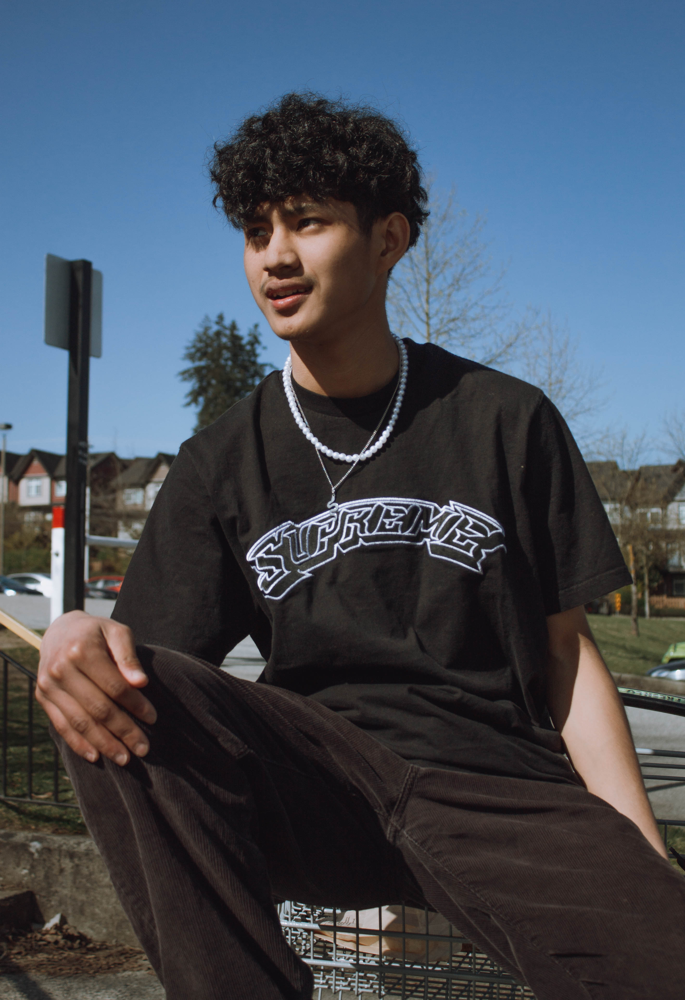
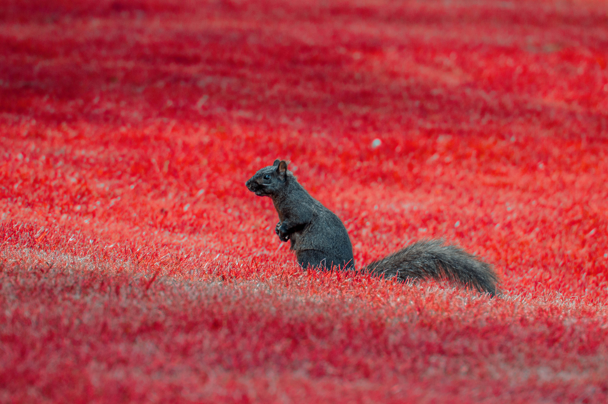

"shadow" | 1/250 f/10 iso100
"lines" | 1/200 f/10 iso100

"pose" 1/1600 f/4.5 iso100
"mountain" | 1/1600 f/4.5 iso100

"house" | 1/200 f/8 iso100

"far" | 1/1600 f/3.5 iso100

"seagull" | 1/1600 f/5.6 iso100

"mount baker" | 1/2500 f/5 iso100
"sand banks" | 1/3200 f/3.5 iso100

"solumn" | 1/200 f/5 iso1600

"squirrel in infrared" | 1/400 f/7.1 iso400

"graffiti" | 1/60 f/3.6 iso80
"society" | 1/80 f/13 iso100
"fire extinguisher" | 1/60 f/5 iso80

"silhouettes" | 1/200 f/5 iso80
portfolio
in photography, i mainly focus on nature and street photography. i enjoy taking candid photos of whatever i see.
candid photography is another one i really enjoy taking. it captures real moments as they happen, without needing to set the shot beforehand. it displays how natural the photos feel, whether it'd be animals, subjects from far away, or even people just going about their day. without my input, that makes it more genuine.
black & white is also something i've been experimenting with. it gives a more solemn, moody feel to photos which i thouroughly enjoy. on a lot of photos now i use/prefer b&w.
camera: canon t3
lens: 18-55mm + 75-300mm
editing software: lightroom
disclaimer: all photos are edited, so it doesn't reflect the settings accurately.